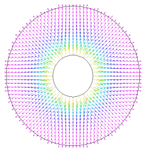

|
prestube |

  
|
|
prestube |
|
{ PRESTUBE.PDE
This example models the stress in a tube with an internal pressure.
- from "Fields of Physics on the PC" by Gunnar Backstrom
}
title ' Tube With Internal Pressure'
variables u v
definitions mm = 1e-3 r1 = 3*mm r2 = 10*mm q21= r2/r1 mu = 0.3 E = 200e9 {Steel} c = E/(1-mu^2) G = E/2/(1+mu) dabs= sqrt(u^2+ v^2) ex= dx(u) ey= dy(v) exy= dx(v)+ dy(u) sx= c*(ex+ mu*ey) sy= c*(mu*ex+ ey) sxy= G*exy
p1= 1e8 { the internal pressure }
{ Exact expressions } rad= sqrt(x^2+ y^2) sr_ex= -p1*((r2/rad)^2 - 1)/(q21^2 - 1) st_ex= p1*((r2/rad)^2 + 1)/(q21^2 - 1) dabs_ex= abs( rad/E*(st_ex- mu*sr_ex)) |
 |
equations { Constant temperature, no volume forces }
u: dx( c*(dx(u) + mu*dy(v)) ) + dy( G*(dx(v)+ dy(u)) )= 0
v: dx( G*( dx(v)+ dy(u)) )+ dy( c*(dy(v) + mu*dx(u)) )= 0
constraints { Since all boundaries are free, it is necessary
to apply constraints to eliminate rigid-body motions }
integral(u) = 0
integral(v) = 0
integral(dx(v)-dy(u)) = 0
boundaries
region 1
start (r2,0)
load(u)= 0 { Outer boundary is free }
load(v)= 0
arc to (0,r2) to (-r2,0) to (0,-r2) to close
start (r1,0) { Cut-out }
load(u)= p1*x/r1 { Normal component of x-stress }
load(v)= p1*y/r1 { Normal component of y-stress }
arc to (0,-r1) to (-r1,0) to (0,r1) to close
monitors
contour(dabs)
plots
grid(x+200*u, y+200*v)
elevation(sx, sr_ex) from (r1,0) to (r2,0)
elevation(sy, st_ex) from (r1,0) to (r2,0)
contour(dabs) contour((dabs-dabs_ex)/dabs_ex)
contour(u) contour(v)
vector(u,v) vector(u/dabs, v/dabs)
contour(sx) contour(sy) contour(sxy)
end